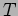
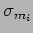
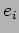

Next: Calculation of
Up: Adaptive Optimal Telescope Scheduling
Previous: Observations
Contents
Phase2 model generator and its configuration
The Phase2Model generator can be used to create ODB snapshots according to various distributiions. It can be called up programatically and configured to create snapshots with varying complexity. The phase2 model is generated with the following parameters:-
- Root
- Specifies the root name for this phase2 model. This is the name by which the model is accessed via a Phase2ModelProvider.
- Name
- The name of the site.
- Latitude of the site.
- Longitude of the site.
- 
- specifies the current point in the semester. Typically this time coincides with the start time of a simulation run.
-
- represents the time difference from to the start of the current semester.
-

- represents the time difference from to the end of the current semester.
- controls the total number of proposals generated. These will have activation times distributed according to
and expiry dated distributed according to
.
- controls the number of groups per proposal, distributed as .
- controls the number of observations per group, distributed as .
Groups are generated using various timing constraint classes according to the following fractions:-
- Fraction of groups to be generated with Flexible timing constraints.
- Fraction of groups to be generated with monitor timing constraints.
- Fraction of groups to be generated with minimum interval timing constraints.
All groups are constructed with start and expiry dates selected from the range
and
respectively.
For monitor groups, the periods are selected with probability determined by variable from one of a set of 3 normal distributions
defined by variables:-

- mean value for monitor period distribution
 .
.
-
- standard-deviation for monitor period distribution
The window fraction is taken from the distribution
.
For MinimumInterval groups, the minimum window is selected with probability from one of 3 normal distributions
defined by variables:-
- mean value for minimum interval length distribution .
-
- standard-deviation for minimum interval lengthdistribution
Observation exposure times are selected with probability  from one of 2 exposure length distributions
defined by variables:-
- mean value for exposure length distribution .
-
- standard-deviation for exposure length distribution .
exposure-max-count specifies the maximum number of multruns per observation, the number of multruns is taken from .
The budget available to each proposal is taken from
with used fraction distributed as
.
Proposals have a scientific priority rating taken from the range 0 (HIGH) to 3 (LOW). The allocation is specified accroding to the fractions:-
- Fraction of proposals with scientific priority 0 (HIGH).
- Fraction of proposals with scientific priority 0 (MED).
- Fraction of proposals with scientific priority 0 (LOW).
Groups have internal priorities selected from the following set.
- Fraction of groups with priority level 1 (normal)
- Fraction of groups with priority level 2 (raised)
- Fraction of groups with priority level 3 (medium)
- Fraction of groups with priority level 4 (high)
- Fraction of groups with priority level 5 (urgent)
- Fraction of groups with Background priority level
- Fraction of groups which represent photometric standards (nominal priority 3).
Various observing constraints are represented by the following parameters:-
- Fraction of groups which require Dark lunar conditions.
-
- Fraction of groups which require photometric extinction conditions.

- Fraction of groups which require minimum seeing of poor (
).

- Fraction of groups which require minimum seeing of average (
).
- Fraction of groups which require minimum seeing of excellent (
).
Next: Calculation of
Up: Adaptive Optimal Telescope Scheduling
Previous: Observations
Contents
Steve Fraser
2008-01-31